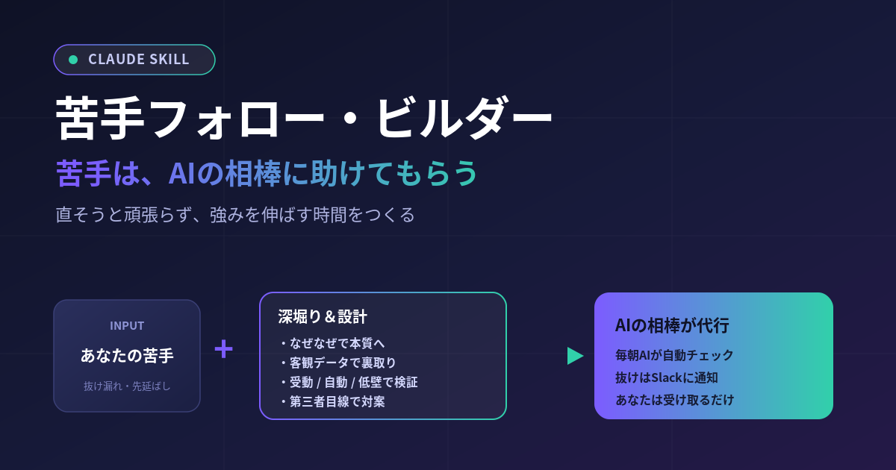

送信前のダブルチェック。付箋。リマインダー。チェックリスト。——それでも同じミスをして、また自分を責める。苦手って、気合いでは驚くほど直らないんですよね。
でも、少し立ち止まって考えてみてください。苦手を人並みに引き上げるのは、労力の割にリターンがとても小さい。同じ時間を得意なことに注いだ方が、あなたの価値はずっと伸びる。だったら苦手は「直す」のをやめて、AIの相棒に助けてもらえばいい。空いた時間で強みを伸ばす。それがこのスキルの発想です。
苦手フォロー・ビルダーは、あなたの「苦手」を肩代わりしてくれる“AIの相棒”（あなた専用スキル）を、対話を通じて設計・生成してくれるメタスキル（＝スキルを作るためのスキル）です。ゴールは、あなたが頑張らなくても助けてくれる相棒を手に入れること。
おもしろいのは、あなたが「こう解決したい」と言った案をそのまま鵜呑みにしないところ。人が最初に口にする対策は、たいてい「もっと気をつける」のような根性論で、それはこれまで失敗してきた道です。だからこのスキルは、原因を掘り下げてから、あなたが動かなくても回る形に作り替えます。
「自己申告の原因」は当てにしません。優秀なコーチのように、必要なら丁寧に反論しながら、症状ではなく本当の原因まで一緒に降りていきます。
「本当は月に何回起きてる？」を、実際のやり取りから数えて確かめます。自己認識と事実のズレ自体が、いちばん大事な発見になることも。
採用するのは「本人が動かなくても回る／時間やイベントで自動起動／操作コストほぼゼロ」を全部満たす案だけ。「毎回チェックする」系は不合格です。
起動のきっかけを「人の気づき」から「毎朝6時」「メール受信」へ移します。だから“うっかり忘れる”が構造的に起きません。
すると、いきなりスキルを作り始めたりはしません。まず現象を聞き（①ヒアリング）、なぜなぜ＋客観データで原因を掘り（②深堀り）、受動・自動・低壁を満たす案を一緒に詰め（③ディスカッション）、設計が固まってから生成（④）、最後に別のAIがレビュー（⑤）——この順番を飛ばさないのが特徴です。スキルの本体は「深堀りと議論」にあり、生成は最後の一手にすぎません。
ちなみに、Slack・Notion・メール・カレンダーなどを繋いでおくと、原因特定の精度がぐっと上がります（実データで裏取りできるため）。繋がっていなくてもヒアリングで進められるので、まずは気軽に話しかけてOKです。
あなたが頑張らなくても回る仕組みを、一緒に設計しましょう。まずはこう打ってみてください。
「苦手をフォローするスキルを作りたい」